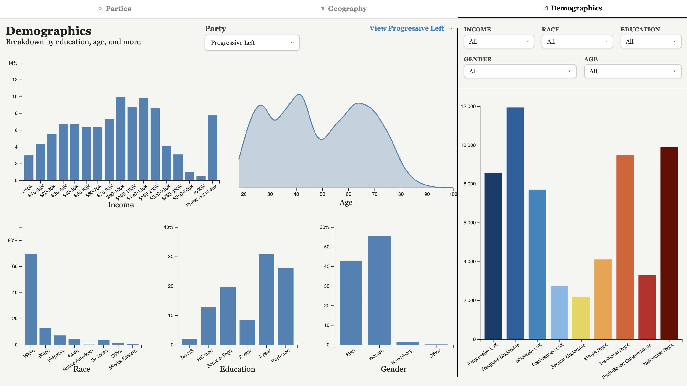
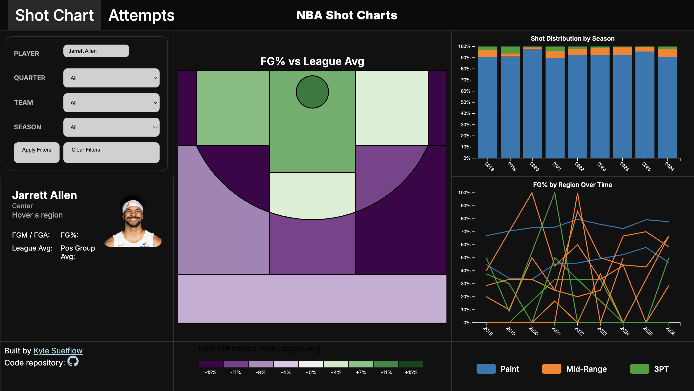
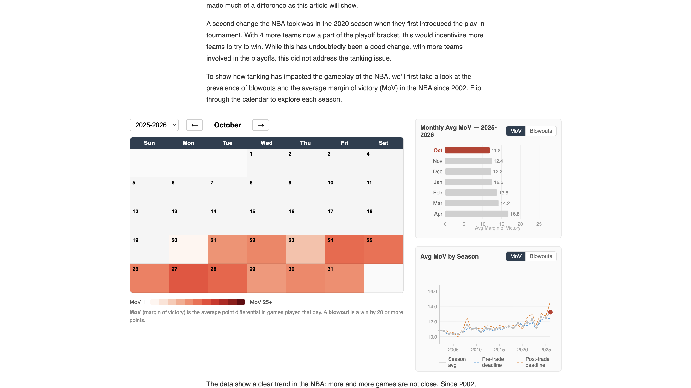
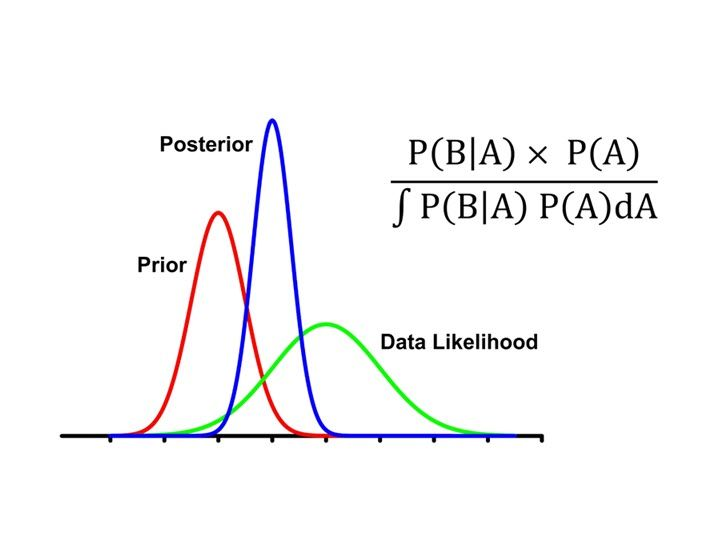
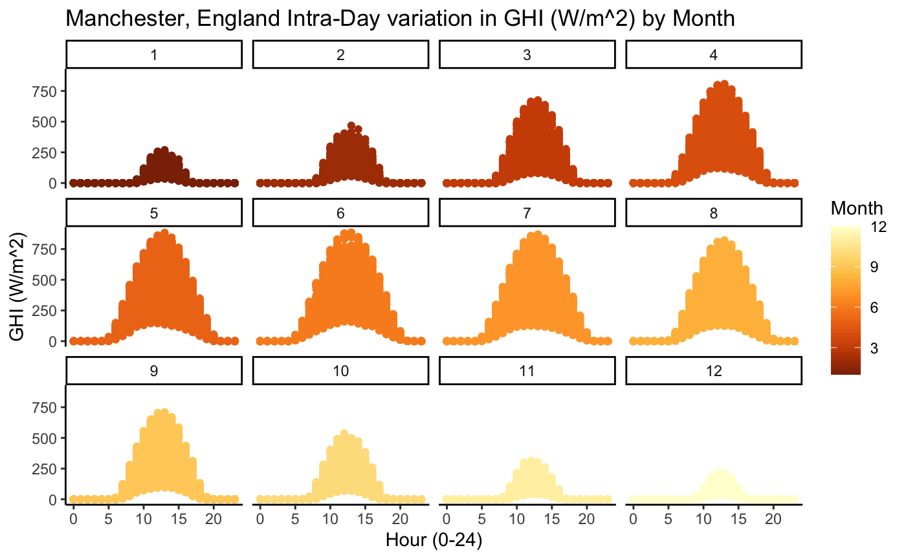
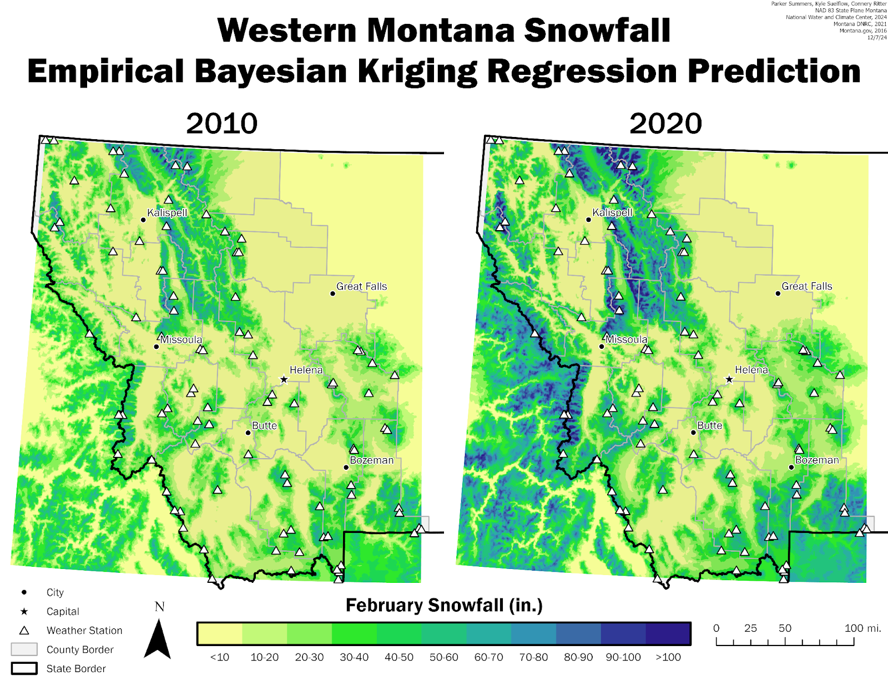
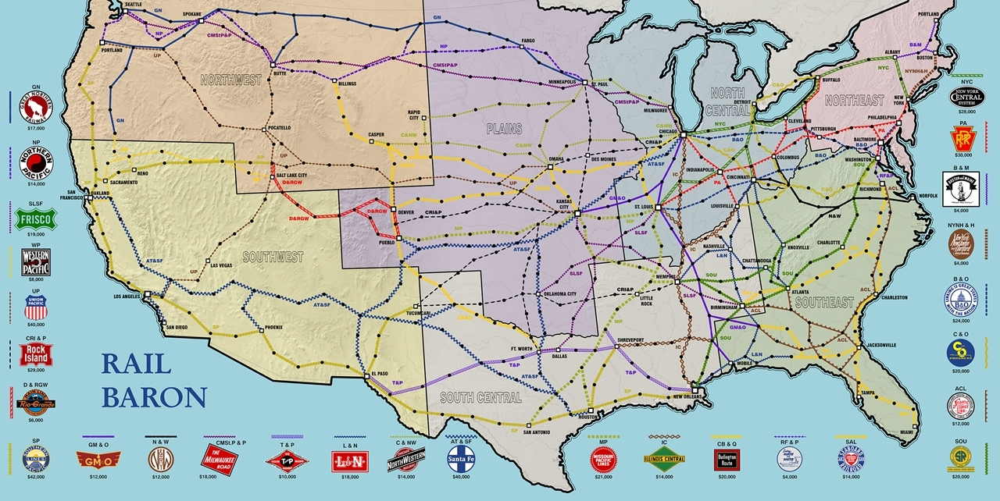
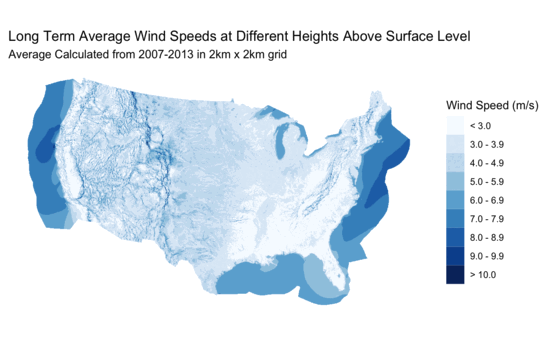

Hello! My name is Kyle Suelflow. I am an aspiring data scientist hoping to communicate insights from data through compelling data visualization.
Interactive web-based data visualization is what interests me most. This project exploring a hypothetical multi-party system in the US is one example. I believe that well thought out data visualization is an excellent way to communicate information effectively.
I graduated from Macalester College in May of 2026 with a degree in data science, and a minor in environmental studies. I worked as an R tutor for 3 years at Macalester before bolstering my data science skills as an intern at Aon inc. Working at the intersection of data and climate particularly interests me. Please reach out to me at the links below to connect.

Using Pew Research's political typology survey as a guide, I clustered respondents from the Community Engagement Survey (CES) into 9 different clusters. This website explores their characteristics through an interactive dashboard.

A custom dashboard to investigate the frequency and efficiency of NBA players' shot attempts over their careers.

The discourse around tanking in the NBA has soured in recent years. This article investigates how tanking affects the on-court product through interactive data visualizations.

In this paper, we investigated a spatial model called Bayesian Conditional Autoregressive, or CAR, focusing on its implementation. We applied it to a data set containing economic data for the western US

To fight climate change, it is crucial to replace carbon-emitting sources of energy with greener alternatives like solar. We utilize time series modeling techniques to model GHI across several different locations in the world.

To predict snowfall, we utilized several different interpolation techniques including IDW and Kriging. As the paper outlines, Embirical Bayesian Kriging (EBK) was the best solution due to its relaxed statistical assumptions.

Rail Baron is a classic railroad building game from the 1970's. In this project, we utilize Gould's Index to find the most important railroad in the game, helping determine which railroads to buy first.

In this project, I use a GIF format to show the varying windspeeds across the US. The high resolution of this map made further analysis difficult.
In collaboration with Prof. Taylor Okonek, I researched the affects of age heaping on models of under-five mortality rate (U5MR). The research is ongoing.